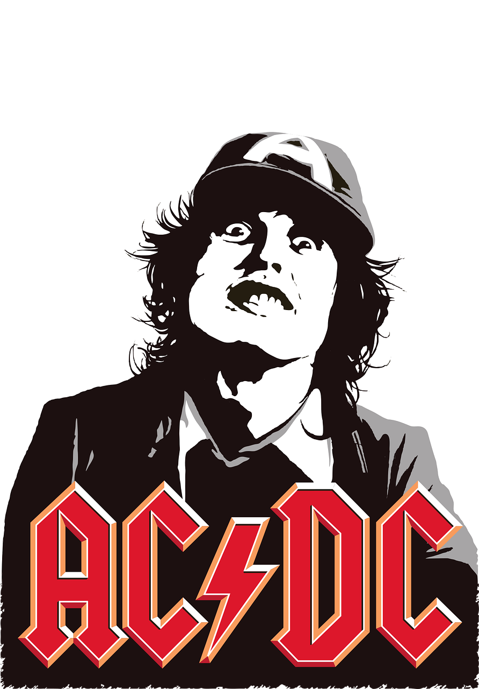
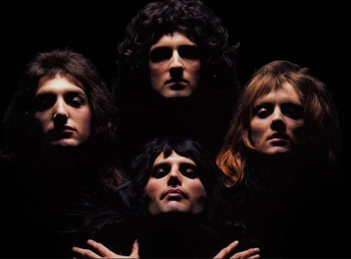
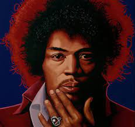
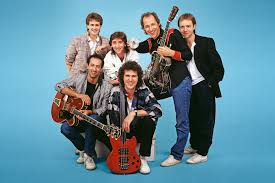

Dire Straits
World Of Music

World Of Music
AC/DC (stylised as ACϟDC) is an Australian rock band formed in Sydney in 1973 by brothers Malcolm and Angus Young. Their music has been described as hard rock, blues rock, and heavy metal, but the band themselves call it "rock and roll".
AC/DC underwent several line-up changes before releasing their first album, 1975's High Voltage. Membership then stabilised around the brothers, singer Bon Scott, drummer Phil Rudd, and bassist Mark Evans and Cliff Williams, who has appeared on every AC/DC album since 1978's Powerage. In February 1980, about seven months after the release of their breakthrough album Highway to Hell, Scott died of acute alcohol poisoning after a night of heavy drinking. AC/DC had initially considered disbanding, but at Scott's family's request, the remaining members opted to continue the band, bringing in longtime vocalist Brian Johnson as Scott's replacement. Later that year, the band released their first album with Johnson, Back in Black, which was dedicated to Scott's memory. The album launched AC/DC to new heights of success and became one of the best selling albums of all time.
The band's eighth studio album, For Those About to Rock We Salute You (1981), was their first album to reach number one in the United States. Prior to the release of their next album, Flick of the Switch (1983), Rudd left the band and was replaced by Simon Wright, being in turn replaced by Chris Slade in 1989. The band experienced a commercial resurgence in the early nineties with the release of their twelfth studio album The Razors Edge (1990); it was their only album to feature Slade, who was replaced by the returning Rudd in 1994. Rudd has since recorded five more albums with the band, starting with, and including, Ballbreaker (1995). Their fifteenth studio album Black Ice was the second-highest-selling album of 2008, and their biggest chart hit since For Those About to Rock, eventually reaching No.1 worldwide.
The band's line-up remained the same for twenty years, until 2014 with Malcolm Young's retirement due to early-onset dementia (he died in 2017) and Rudd's legal troubles. Malcolm was replaced by his nephew Stevie Young, who debuted on AC/DC's 2014 album Rock or Bust, and on its accompanying tour, previous drummer Chris Slade filled in for Rudd. In 2016, Johnson was advised to stop touring due to worsening hearing loss. Guns N' Roses frontman Axl Rose stepped in as the band's vocalist for the remainder of that year's dates. Long-term bass player and background vocalist Cliff Williams retired from AC/DC at the end of the Rock or Busttour in 2016 and the group entered a four-year hiatus. A reunion of the Rock or Bustlineup was announced in September 2020 and the band's seventeenth studio album Power Up was released two months later.
AC/DC have sold more than 200 million records worldwide, including 75 million albums in the United States, making them the ninth-highest-selling artist in the United States and the 16th-best-selling artist worldwide. Back in Black has sold an estimated 50 million units worldwide, making it the second-highest-selling album by any artist, and the highest-selling album by any band. The album has sold 25 million units in the US, where it is the fourth highest-selling album of all time. AC/DC were inducted into the Rock and Roll Hall of Fame on 10 March 2003. AC/DC ranked fourth on VH1's list of the "100 Greatest Artists of Hard Rock” and were named the seventh "Greatest Heavy Metal Band of All Time" by MTV. In 2004, AC/DC ranked No. 72 on the Rolling Stone list of the "100 Greatest Artists of All Time". Producer Rick Rubin, who wrote an essay on the band for the Rolling Stone list, referred to AC/DC as "the greatest rock and roll band of all time". In 2010, VH1 ranked AC/DC number 23 in its list of the "100 Greatest Artists of All Time".